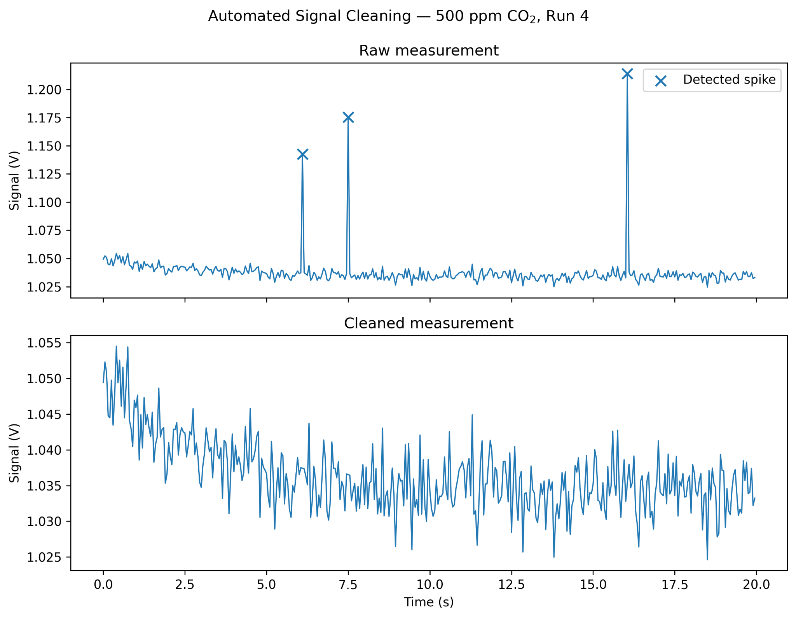
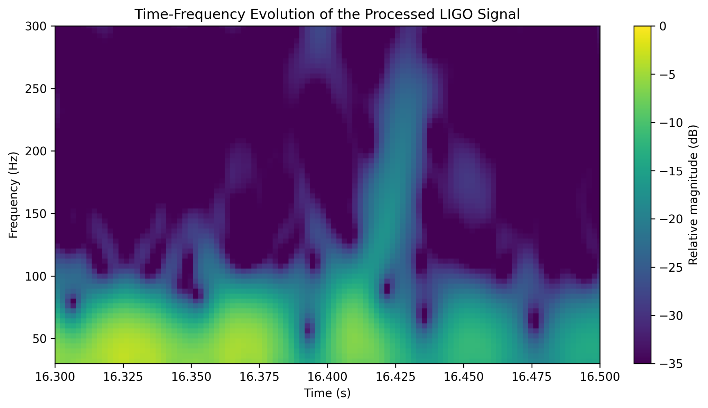
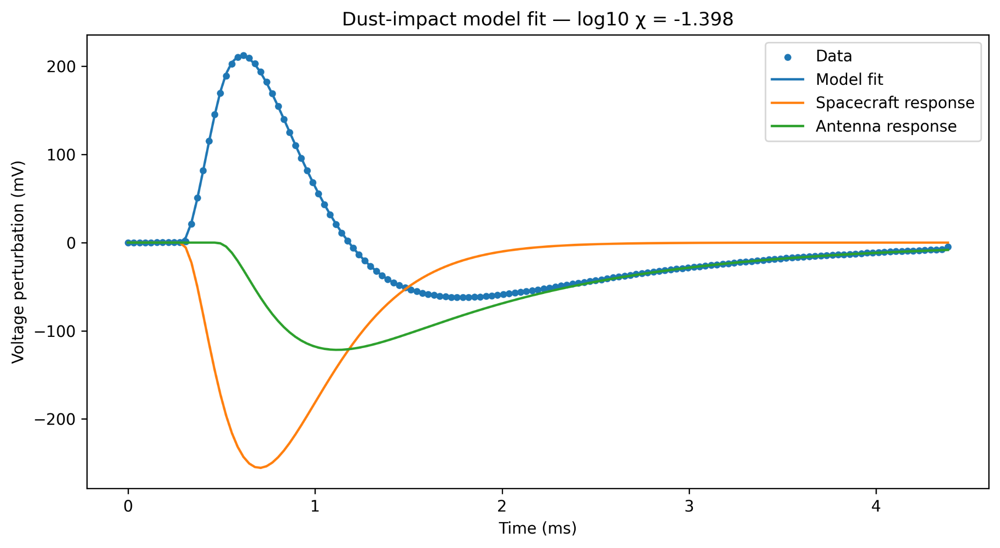

Scientific data analysis and Python
Turning complex scientific data into useful results.
I work with experimental and technical datasets: cleaning messy files, processing signals, fitting physical models and automating repetitive analysis in Python.
Selected work

Scientific data cleaning and calibration
Thirty inconsistent experimental files turned into a validated dataset, automated quality-control workflow and reproducible calibration analysis.

LIGO gravitational-wave signal processing
Real detector data processed using whitening, digital filtering, spectral analysis and detector time alignment.

Solar Orbiter dust-impact modelling
Spacecraft telemetry processed and fitted with a physical model, then scaled to 1,920 events with automated quality control and population analysis.
Services
Help with scientific and technical data.
I am most useful when a dataset is awkward, repetitive or technically specialised and needs a clear, reproducible workflow rather than a one-off spreadsheet fix.
Data cleaning
Cleaning, validating and restructuring CSV, Excel, HDF5 and scientific data files, with clear quality-control checks.
Analysis and visualisation
Signal processing, model fitting, statistical analysis and technical figures for research and engineering datasets.
Python automation
Reusable scripts for repetitive data processing, file handling, analysis and reporting workflows.
About
Research background with a practical data focus.
I am a PhD researcher in optics and photonics with an MSc in Space Physics. My work involves experimental data, spectroscopy, signal processing, physical modelling and scientific programming.
I particularly enjoy the point between raw data and the final result: finding what is wrong with a dataset, building a sensible analysis workflow, and making the result reproducible.
Core tools
Python, NumPy, pandas, SciPy
HDF5, CDF, CSV, Excel
Signal processing and filtering
Nonlinear optimisation and model fitting
Scientific visualisation